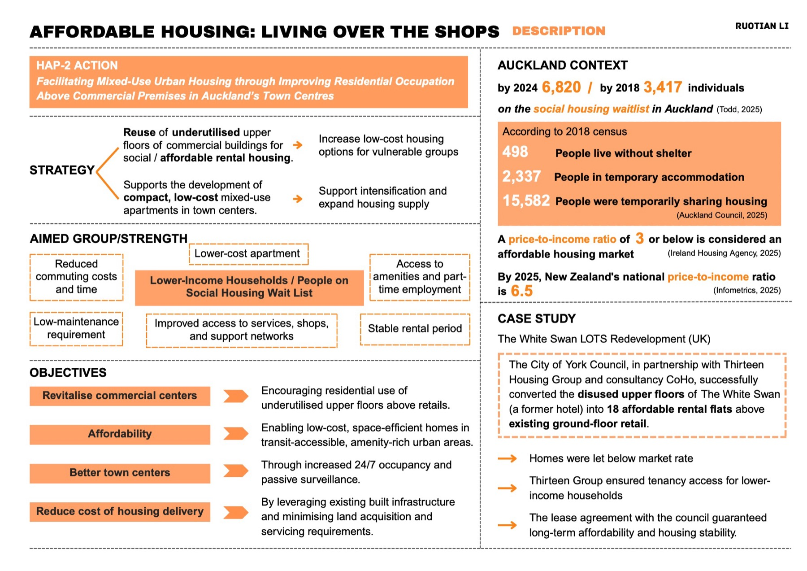
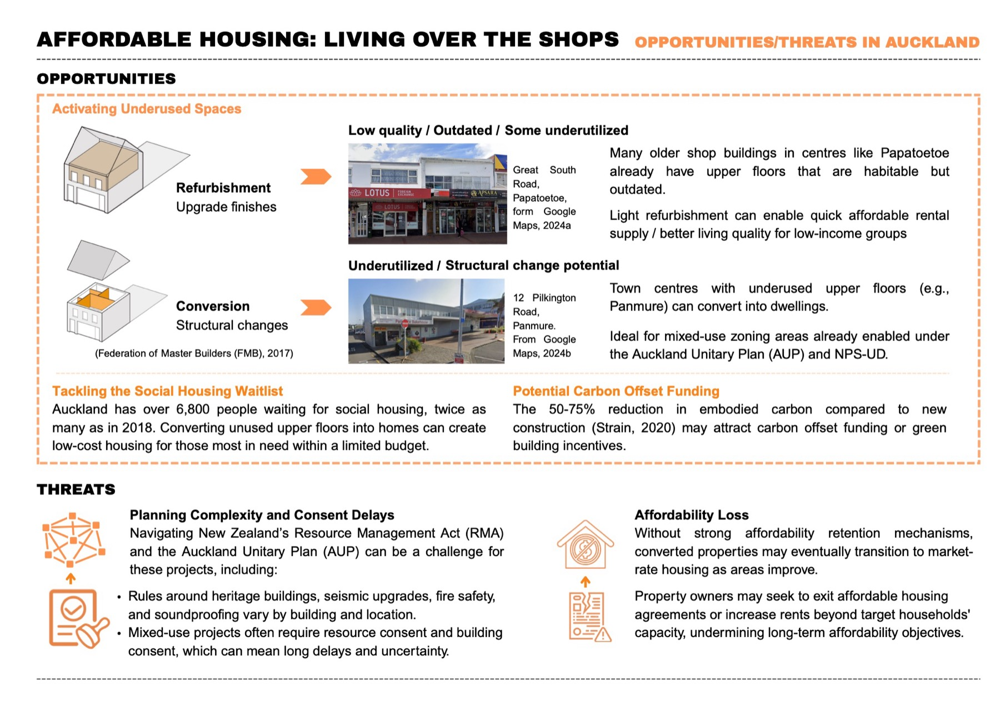
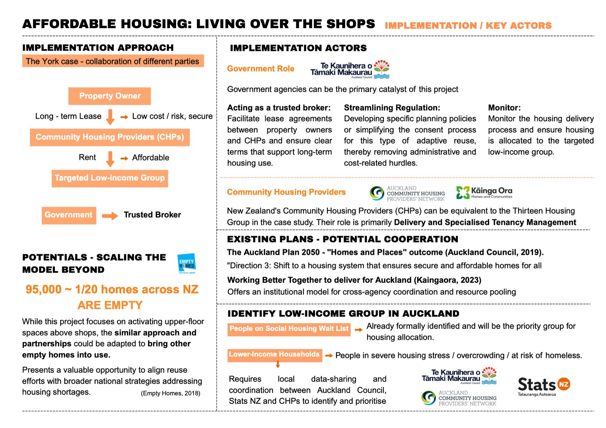

Sheet 05 · Housing policy
Living over the shops
A policy proposal to turn empty upper floors above shops in Auckland’s town centres into affordable rental homes — drawing on a successful scheme in York.
- Year
- 2025
- Context
- University of Auckland, research project
- Role
- Individual project
- Focus
- Affordable housing and town-centre regeneration
- Case study
- The White Swan, York
- Location
- Papatoetoe and Panmure, Auckland

01The need
Auckland’s social housing waitlist doubled from 3,417 people in 2018 to 6,820 in 2024, and New Zealand’s house price-to-income ratio stands at 6.5 — more than twice the level usually considered affordable. Meanwhile, many upper floors above shops in town centres sit empty or under-used.
02Two routes
Older shop buildings in centres like Papatoetoe often have habitable but outdated upper floors that need only light refurbishment; others, as in Panmure, need structural conversion. Both are enabled by mixed-use zoning under the Auckland Unitary Plan and the NPS-UD — but consenting complexity and the long-term loss of affordability are real risks.
The English experience is instructive: Permitted Development Rights have sped up conversions like these, but have been criticised for allowing poor-quality homes.

03Delivery
Adapting York’s model, a property owner leases upper floors long-term to a community housing provider, which lets them to households on low incomes, with the council acting as a trusted broker between them.

Boards include Google Street View imagery, diagrams from the Federation of Master Builders and organisation logos, credited on the boards.